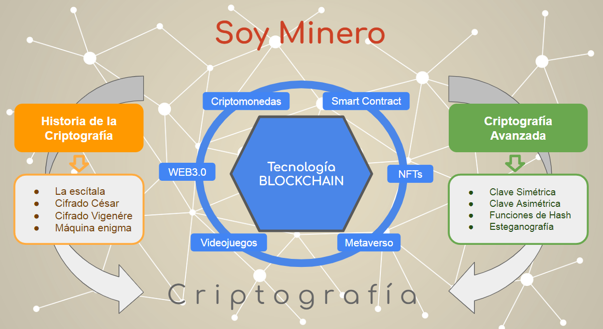

Una vez hemos terminado la tarea es momento de reflexionar sobre qué hemos aprendido.
Una vez hemos terminado la tarea es momento de reflexionar sobre qué hemos aprendido.
Las criptografía y sus derivados como la blockchain, tienen gran importancia en el presente y un futuro brillante por delante. Definitivamente, la formación en estas cuestiones es una de las más necesarias en esta década.
El poder enviar dinero, registrar un documento o cobrar un recibo sin pasar por un registro o por el banco, en un plazo no muy largo de tiempo estará a nuestro alcance, y como no, a través de nuestros inseparables teléfonos móviles.
El siguiente esquema puede servirnos para ver que hemos trabajado en la tarea.

¿Qué he aprendido?
Ahora es el momento de organizar la información y tus ideas sobre lo que has ido aprendiendo a lo largo de este reto.
Te voy a proponer que pienses en qué ha sido lo más importante de todo lo que has aprendido para conseguir el reto.
Para un momento y dirígete al PASO 4 (¿Qué he aprendido?) de tu Diario de aprendizaje. En este paso analizarás todo aquello que has ido aprendiendo, reflexionando sobre lo más importante y pensando en qué situaciones o momentos podrías volver a usar lo que has aprendido.
Por ello, lo que descubras te servirá para cuando tengas que alcanzar retos parecidos en un futuro.
Recuerda:
- Pregunta a tu profesor o profesora si lo vas a rellenar en papel o en el ordenador.
- Si lo rellenas en el ordenador, no te olvides de guardarlo en una carpeta que más tarde puedas localizar.
¡Ánimo, que lo harás genial!
Para finalizar
Para concluir, vamos a recordar la estrategia o el “truco” que has aprendido durante este reto.
Esta estrategia o “truco” te lo enseñamos y lo trabajaste en el apartado 2 de la página Blockchain. Vuelve a dicho apartado y repasa un momento en qué consistía y cómo te sirvió para llegar a conseguir el reto que te proponíamos.
Abre, ahora, el Diario de Aprendizaje y completa su última página.
En este apartado guardarás información valiosa sobre la estrategia, en qué actividades las has aplicado, si ha sido útil y qué te ha resultado más difícil.
¡Estás avanzando mucho y consiguiendo grandes logros! ¡Sigue así!
Por tu esfuerzo has conseguido aquí la segunda insignia que te acreditará como Mega-Estratega. ¡Enhorabuena!
Recuerda:
- Pregunta a tu profesor o profesora si la rellenarás en papel o en el ordenador.
- Si la rellenas en el ordenador, ¡no te olvides de guardarla en tu ordenador cuando la termines!
¿Qué has conseguido?
Antonio Domínguez Peñuela. Rúbrica (CC BY-SA)
- Actividad
- Nombre
- Fecha
- Puntuación
- Notas
- Reiniciar
- Imprimir
- Aplicar
- Ventana nueva
| Excelente | Satisfactorio | Mejorable | Insuficiente | |
|---|---|---|---|---|
| Comprendo cuales son los elementos de un criptosistema. | Totalmente de manera clara y he realizado todas las actividades. (1) | Lo comprendo y he realizado las actividades pero con algunas dudas (0.75) | Lo comprendo parcialmente, hay actividades que se me han resistido. (0.5) | No entiendo casi nada y no he podido realizar las actividades (0.25) |
| He comprendido cómo funciona la escítala y el cifrado César | Totalmente y lo he hecho de manera autónoma (1) | Lo he hecho pero he necesitado ayuda (0.75) | Lo he hecho, pero he necesitado una guía continua (0.5) | No he podido hacerlo (0.25) |
| He entendido el funcionamiento del cifrado de Vigénere | Sí y sería capaz de explicarlo (1) | Lo he entendido y sabría explicarlo con ayuda (0.75) | Lo he entendido pero no sabría explicarlo (0.5) | No lo he entendido (0.25) |
| He entendido el funcionamiento de la máquina enigma. | Sí y sería capaz de explicarlo (1) | Lo he entendido y sabría explicarlo con ayuda (0.75) | Lo he entendido pero no sabría explicarlo (0.5) | No lo he entendido (0.25) |
| Comprendo como funciona la criptografía simétrica | Sería capaz de usarla y explicarla (1) | Lo he entendido y sabría explicarlo y utilizarla con ayuda (0.75) | Lo he entendido pero no sabría explicarla ni usarla (0.5) | No lo he entendido (0.25) |
| Comprendo como funciona la criptografía asimétrica | Sería capaz de usarla y explicarla (1) | Lo he entendido y sabría explicarlo y utilizarla con ayuda (0.75) | Lo he entendido pero no sabría explicarla ni usarla (0.5) | No lo he entendido (0.25) |
| Comprendo como funcionan y para qué se utilizan las funciones de hash. | Lo comprendo y capaz de usarlas de manera autónoma (1) | Lo comprendo y capaz de usarlas pero he necesitado ayuda (0.75) | Lo he hecho, pero he necesitado una guía continua (0.5) | No he podido hacerlo (0.25) |
| He entendido el funcionamiento de la esteganografía | Sí y sería capaz de explicarlo (1) | Lo he entendido y sabría explicarlo con ayuda (0.75) | Lo he entendido pero no sabría explicarlo (0.5) | No lo he entendido (0.25) |
| He comprendido como se forma una cadena de bloques | Sí, lo he hecho de manera autónoma (2) | Lo he hecho pero he necesitado ayuda (1.5) | Lo he hecho, pero he necesitado una guía continua (1) | No he podido hacerlo (0.25) |
| Comprendo como funcionan las criptomonedas | Sí, lo tengo muy claro y sabría utilizarlas. (1.5) | Sí, lo he entendido y sabría explicarlo con ayuda (1) | Lo he entendido pero no sabría explicarlo (0.5) | No lo he entendido (0.25) |
| Entiendo las NTFs y otras aplicaciones del blockchain | Sí, lo entiendo y lo he hecho de manera autónoma (1.5) | Sí, lo he hecho, pero he necesitado ayuda (1) | Lo he hecho, pero he necesitado una guía continua (0.5) | No he podido hacerlo (0.25) |
Motus dice ¿Te ha resultado interesante?
¡Enhorabuena!
- ¿Te ha parecido interesante todo lo que has aprendido en este REA?
- ¿Cómo te has sentido?
- ¿Por qué?
- ¿Estás satisfecho la simulación final que has realizado?
Seguro que algunas cosas te han resultado fáciles y otras han sido más difíciles, no pasa nada; estoy convencido de que ahora tienes una idea mucho más clara de cosas de las que habías oído hablar y no entendías.
Felicidades por que has conseguido entender y aplicar un tema muy actual y además, parece claro que nos espera un futuro lleno de bloques.